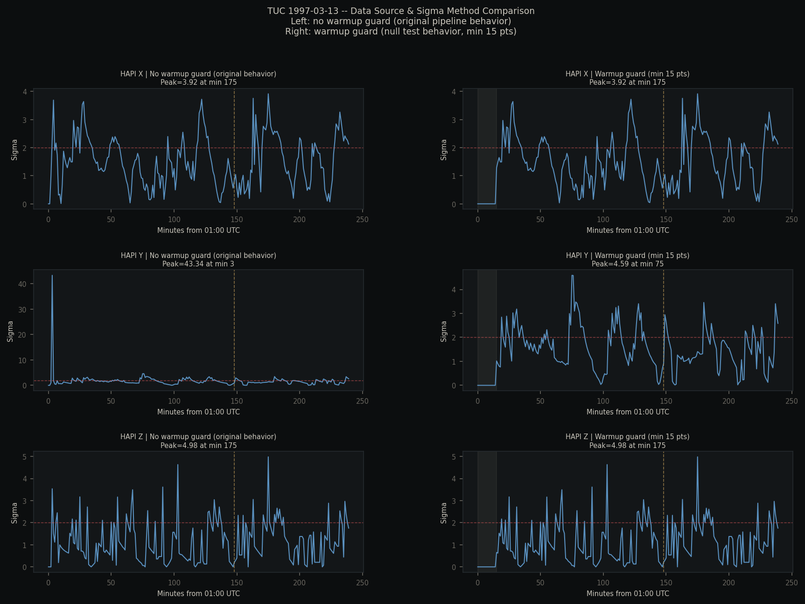
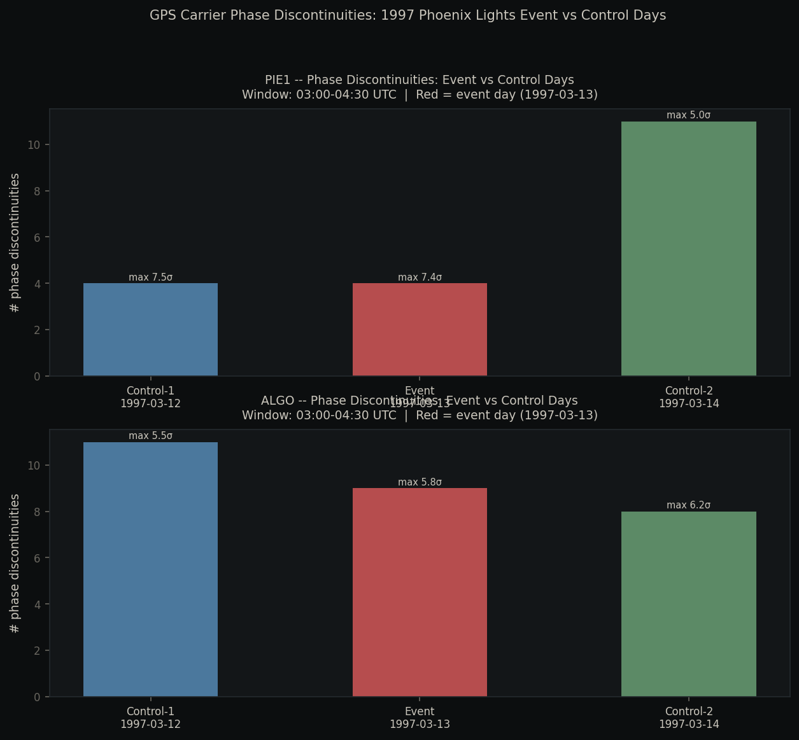

Phoenix Lights (1997): public instrument signals in event context
Built for open discussion: this page shows what the sensors returned, where they line up with the event timeline, and what that does (and does not) imply.
This is not a debunk page and not a proof page. It is a reproducible marker-hunt using public archives.
For a historical event with known timeline/route, the pipeline checks independent instrument streams (magnetometer + context lenses) and asks: do anomaly windows cluster near event timing?
For Phoenix 1997, the strongest marker is a high-sigma geomagnetic signal with event-window overlap.
Methods In Plain English
How the signal is scored
Event points and witness times define a modeled timeline window.
Each sensor stream is baseline-normalized with rolling sigma.
Spikes above threshold are logged as anomalies.
When multiple lenses spike near the same minute, that becomes a convergence marker.
This flags timing alignments in public data. It does not by itself identify mechanism.
Phoenix 1997
Core numbers from the run
Witness points
9
modeled timeline inputs
Timeline span
155 min
event window
Mag anomalies
178
sigma-threshold hits
Convergence windows
14
multi-lens overlaps
Top peak
6.333 sigma
highest merged window
Top timestamp
03:25 UTC
1997-03-14
Top windows
Lenses
Peak sigma
1997-03-14 03:25 UTC
magnetometer + nexrad lens
6.333
1997-03-14 03:31 UTC
magnetometer + nexrad lens
6.333
1997-03-14 02:30 UTC
magnetometer + nexrad + spaceweather lens
4.121
Visuals
What the plots show

Phoenix event-window diagnostic (TUC focus). This visual tracks where the spike intensity concentrates inside the run window.

Phoenix control comparison output. This helps separate corridor-local behavior from broader ambient baseline behavior.
Read this as:
- there are timestamped anomaly windows in public data
- those windows overlap the modeled event timeline
- the strongest marker is concentrated, not spread everywhere
Context
What this means for discussion
For public discussion (Reddit, forums, etc.), this gives a concrete artifact: a reproducible signal marker with timestamps, figures, and method notes.
It is evidence of a coincident instrument signature, not a full explanation of cause. That distinction matters.